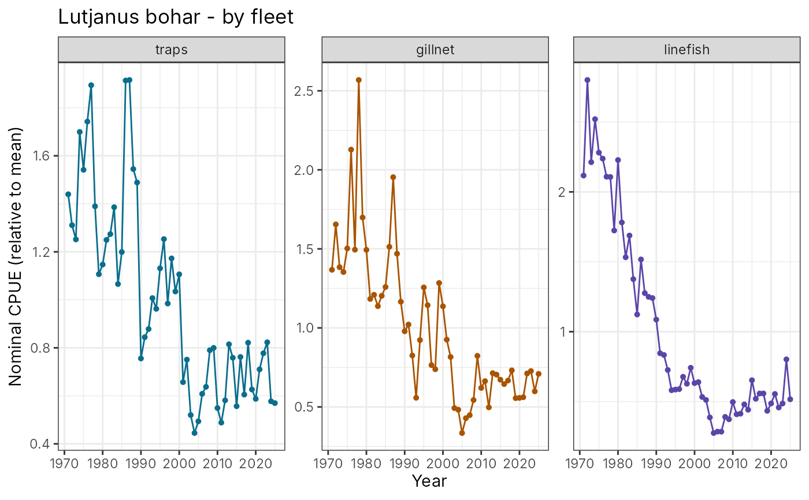

catch_table(): observed catch (t) by fleet, summed over fleets ("aggregate"), or summed over fleets and species ("combined").effort_table(): observed effort (fishing days) by fleet or summed over fleets.nominal_cpue(): catch / effort (kg per fishing day) at the chosen level, and as an index relative to its mean."aggregate"divides the catch of all fleets by the effort of all fleets, ignoring that a day of trap fishing and a day of linefishing catch differently;"combined"also sums the catch of all species.
Arguments
- data
a
floss_data.- species
species names; default all (for
"combined", the species summed).- by
"fleet","aggregate"or"combined"(catch, CPUE).
Value
a data frame with species, iter, year, source (fleet or
"all fleets") and the values (observed and true).
Details
Nominal CPUE uses all years with catch and effort, unlike the CPUE
index of sample_data() (which is a standardised index for the sampled
years). With changing fleet mix or effort creep, nominal CPUE drifts away
from the stock: compare it with cpue_true (true catch / true effort)
and the true biomass.
Examples
# \donttest{
x <- simulate_fishery(nsim = 2, iters = 1)
head(nominal_cpue(x$data, by = "aggregate"))
#> species iter year source catch_t effort cpue
#> 1 Carcharhinus melanopterus 1 1971 all fleets 26.34111 582 45.25963
#> 2 Carcharhinus melanopterus 1 1972 all fleets 29.08215 516 56.36076
#> 3 Carcharhinus melanopterus 1 1973 all fleets 33.97667 706 48.12560
#> 4 Carcharhinus melanopterus 1 1974 all fleets 42.85550 797 53.77102
#> 5 Carcharhinus melanopterus 1 1975 all fleets 48.48520 1054 46.00114
#> 6 Carcharhinus melanopterus 1 1976 all fleets 50.29837 930 54.08426
#> index catch_true effort_true cpue_true index_true
#> 1 0.9997929 26.38079 522.3684 50.50227 1.147047
#> 2 1.2450185 27.87265 541.4572 51.47712 1.169188
#> 3 1.0631026 35.56634 688.7058 51.64228 1.172939
#> 4 1.1878109 39.43281 839.1149 46.99334 1.067349
#> 5 1.0161728 50.33827 941.0162 53.49352 1.214986
#> 6 1.1947305 49.83039 905.2078 55.04857 1.250306
plot_aggregate(x$data, "Lutjanus bohar", what = "cpue", by = "fleet")

# }